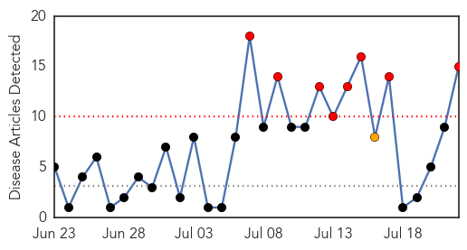
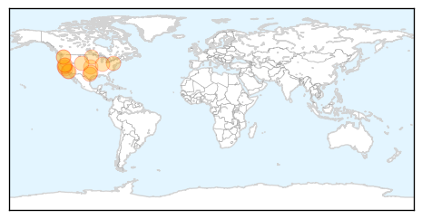
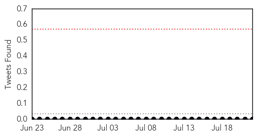
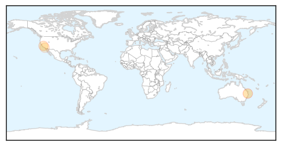

West Nile Virus
30-Day Web Trend
8 alerts, 1 warnings

30-Day Twitter Trend
1 alerts, 0 warnings

Article Locations
Article Confidences
Top Articles:
- 0.990
- California records first West Nile death of the year
- 0.984
- Louisiana sees first West Nile cases of 2015
- 0.979
- Prime West Nile season sees few positive mosquitoes
- 0.975
- Grab the bug spray: Mosquitoes breeding prolifically in York County
- 0.964
- Dallas County reports its first human West Nile case of season
- 0.936
- Get Healthy: Buzz off! Carson City combats mosquitoes
- 0.924
- Mosquito pool tests positive for West Nile virus in #Boulder #WestNile
- 0.911
- Protect against West Nile virus
- 0.906
- West Nile found in Allen County
- 0.897
- First West Nile death a reminder to be vigilant
- 0.887
- First West Nile Virus Death Of 2015 Confirmed In California
- 0.883
- Health officials urge to remove standing water to prevent spread of WNV
- 0.864
- Pool of Mosquitoes in Wahpeton Tests Positive for West Nile Virus
- 0.777
- First West Nile Death in California
- 0.583
- First Horse Infected With West Nile This Year
Top Tweets:
-
No tweets found for Jul 22, 2015
Measles
30-Day Web Trend
3 alerts, 4 warnings

30-Day Twitter Trend
0 alerts, 0 warnings

Article Locations
Article Confidences

Top Articles:
Top Tweets:
-
No tweets found for Jul 22, 2015